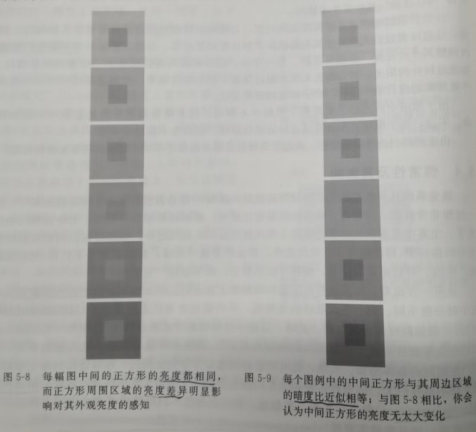

5.人类视觉感知简介
5.2 视觉系统
系统的早期视觉部分用于检测边(不同亮度区域间的边界),并且将它们整合拼接,以便大脑从整体上进行感知.
视觉的最终结果是大脑中构建的模型,而不是客观实体.

5.3 眼睛
眼睛受限于可察觉的最小亮度差和最小角度分辨率,超出这个范围的显示器复杂性就没有必要.
5.3.1 眼睛的生理机能
人眼在左右眼上形成的视图通常是不同的,它们之间的视差有助于我们估计场景中景物的深度,视觉系统可以通过聚焦/失焦机制检测物体到眼睛的距离,在适应大范围的亮度变化时,瞳孔的调整几无效果,因为瞳孔面积至多可以改变十倍.
5.3.2 眼睛中的光感受器
视锥和视杆细胞
眼睛后侧表面的一大部分为视网膜,主要分为视杆细胞(Rod)和视锥细胞(Con),视锥细胞负责感受颜色,视杆细胞负责感受敏感,视杆细胞远多于视锥细胞,大约是20:1,两者分布也不均匀,视锥细胞在瞳孔中央处非常密集.视网膜上另一个特殊区域是视盘,视神经通过它与眼睛相连,视盘上没有视锥细胞和视杆细胞,但是人却不会感受到盲点
明度感受和能量的关系
粗略的说,如果两个光源几何形状相同,A光源看上去是B光源的一半,那么A光源的能量就是B光源的18%左右.也就是说能量衰减82%,人眼感受会觉得明暗只是下降一半,这一特性推动了gamma矫正的出现(按照人眼的特性调整亮度分布,而不是根据能量的衰减均匀划分)
马赫带效应的缘由
到达某一视觉细胞的一束额外光不仅增加了该细胞的明度感知,也稍稍降低了邻近视觉细胞的敏感度,通常称之为侧向抑制.马赫带效应正是因为周边的部分被抑制了感知,所以在达到一定的明度变化值之后人眼才能区分.
人眼对边界的感知极限大约是1.6分弧度,1分弧度是1/60°
人眼的光暗动态调整
眼睛可辨识局部鹊羽大约为100:1的亮度差异.但当面对光照极具降低的情况,通过化学变化,大约半个小时之后,人眼可以辨识到非常低的光亮,可辨识的白天最亮和夜晚最暗的对比可以达到1000000:1,所以人眼是可以对不同区域有不同的敏感辨识度的,眼睛的自适应功能具有区域局部性.这种局部性产生之后,会自动忽略掉一些细节,例如很亮的地方,周边暗部的细节就会被自然忽略
5.4 恒常性及其影响
颜色不变形,形状不变形,大小不变性,这种性质有利于我们避免认知混乱,但也导致我们对于颜色,形状,大小的判断都不是很准确,所以我们才更加的依赖于通过对比来判断.在图形当中相对亮度比绝对亮度更重要,亮度的比值比两者的差异更重要.

5.5 延续性
格式塔心理学认为:大脑倾向于将事物看做一个整体,而不仅仅是各个部分.档条对角线穿过一垂直条带的后面时,往往难以准确判断该对角线的两部分是否对齐.
5.6 阴影
阴影有助于估计离开地平面的物体与观察者的距离